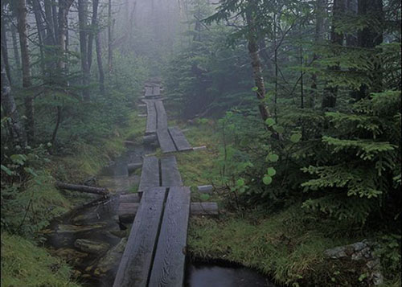
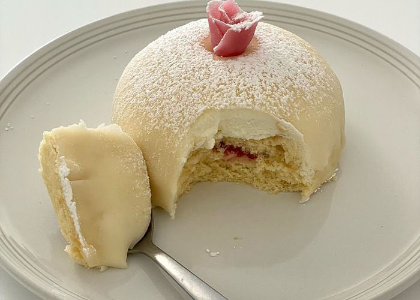

Writing: Poetry and short horror stories let me
explore mood, voice, and rhythm—skills that also help me write
clear UI text.

Hiking: Nature clears my head and inspires color
choices. Trails connecting towns make the best day trips.

Baking: Precise steps, repeatable results—very
similar to coding. Cupcakes are my favorite mini-project.
Plants & Backyard Life 🌼
Honeysuckle — a reminder to slow down and enjoy the details.
Hello! Thanks for visiting my site.